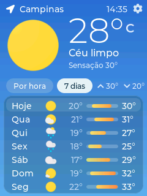

Versão padrão
A instalação mais comum. Use esta opção primeiro — a tela deve exibir as cores corretas.
O Aura é um display inteligente de previsão do tempo para a sua casa. É open source, custa menos de US$ 20 para montar e fica pronto em segundos — sem fios e sem solda.

Esta página serve somente para gravar o software na placa ESP32. A montagem e o restante do projeto estão nas instruções completas do Aura.
Ligue sua placa ESP32-2432S028R ILI9341 (tela de 2,8") a uma porta USB do computador.
Use o botão abaixo. Funciona apenas no Google Chrome ou Microsoft Edge.
Quando o navegador pedir, selecione a porta chamada “USB Serial”.
Clique em “Install Aura” (ou “Instalar”) e aguarde a barra de progresso terminar.
A instalação mais comum. Use esta opção primeiro — a tela deve exibir as cores corretas.
Algumas placas guardam as cores de forma diferente na memória e a tela aparece com as cores erradas. Se isso aconteceu, instale esta versão.
Essa etapa deve passar rápido. Se travar, a placa não está conectada corretamente ou não entrou no modo de atualização. Existem vários modelos de placa, e cada um pode precisar de um jeito diferente. Estas são as soluções mais comuns:
Na lista de portas, escolha sempre a que aparece como “USB Serial”.
Algumas placas precisam ser forçadas ao modo de gravação: mantenha pressionado o botão RST enquanto inicia a instalação.
Outras placas exigem esta sequência: pressione e segure o botão BOOT, pressione e solte o botão RST e, por fim, solte o botão BOOT.
Placas com duas portas (USB-C e Micro USB) às vezes só aceitam gravação por uma delas. Muitas placas USB-C gravam normalmente pela USB-C, mas algumas só funcionam pela Micro USB. Tente as duas.
Vários usuários relataram que o cabo barato que acompanha a placa não funcionou, e que ao usar outro cabo tudo deu certo.
Nota: a foto da placa é do artigo do Random Nerd Tutorials — um ótimo site para aprender mais sobre essas placas.
Para atualizar para a versão mais recente, basta instalar o software novamente pelos botões acima.
Modo noturno (a tela escurece automaticamente após as 22h) e novas traduções para sueco, turco e italiano.
Correção de uma tradução que estava faltando para “Sensação térmica”.
Seleção de idioma com suporte a espanhol, francês e alemão. Possibilidade de escurecer mais a tela.
Opção de exibir a hora no formato 12/24 horas e correção de um erro na previsão por hora que mostrava os ícones de sol e lua nos horários errados.
Adicionada a hora atual na tela.
Lançamento inicial.